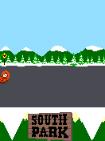

We started South Park from Banjo’s portable ExEn core. Its game logic immediately found more to ask for: complete short arrays, real resource reads and a service result we couldn’t leave null.SP01SP02
Half a short is not enough.
The old storage model kept only a byte where a signed sixteen-bit array element belonged. South Park packed velocity across those bits. Losing the high byte left movement at zero. Preserving the full short, with the right sign extension, repaired what otherwise looked like a game that would not move.SP02
Resource array reads also had to retain every element beyond the inline slots. Sms.getPrice needed to return an actual VM string from the original tariff data; the unimplemented null result caused a later operand-stack crash. Offline sending still returned failure. Fixing a price query was not pretending a dead SMS service had answered.SP02

Original Kenny Cow Dodge, 132×176, retained from historical host execution.
Open the image for the full original view.
SP90Thirteen little control schemes.
I had thirteen original minigames here, and one generic action layout wasn’t going to explain them. Cow Dodge needed up and down. Gnomes added a kick. The rhythm games used left, middle and right, while Catapult wanted nine numbered windows. We needed to follow the episode I was actually playing.SP04
A read-only observer followed the original scene and selected episode. Changing the overlay could then release touch roles safely while retaining physical ownership, and keep the same game viewport in place. The episode-entry checks cover all thirteen, without turning entry into a claim of completing them all.SP05SP08
An empty audio buffer can be healthy.
Later silent-audio work found a player waiting for the wrong state. A static AudioTrack starts without data. The bridge rejected that state before writing the PCM that would make the track ready. The original melody never got as far as playback.SP03
Writing the original samples before requiring loaded readiness connected the VM’s sound request to the Android output API. The framework checks could measure accepted bytes and play calls. Whether the next phone build sounded right remained a separate listening test.SP06SP07
The full-width arrays and service repairs we made here appear explicitly in Crash’s runtime notes. South Park had filled in parts of the core that the next game didn’t need to discover again.XC01
About these records
The inherited VM and original inputs retain their credits. The minigame probes establish entry and recorded controls, not completion of all thirteen. Audio evidence reaches the Android API through its stated framework sink, not a physical speaker. Prior owner silence/comfort feedback motivated the later work without being relabeled as phone acceptance of 0.1.2. The image is an original-runtime host frame.
The receipts
Selected report lines, investigation notes and recorded feedback. Each receipt keeps its original source and scope.
SP01 / The Banjo ExEn foundationCheckpoint investigation notes
Source: 24-South_Park_ExEn_Bridge_v0.1.2_PRIVATE_CHECKPOINT.zip / South_Park_ExEn_Bridge_v0.1.2_PRIVATE/native/README.md · selected lines 3–14
Runs the supplied unchanged NEXE bytecode and original assets. Derived from the private Banjo ExEn checkpoint's Handyplay ExEn core, upstream commit 460b149302e9a52523bc314a37efabbee9f3d666 (AGPL-3.0). Full native source and license are included. Original firmware classes and game content remain private. Use Zig 0.15.2. Host: `zig build -Doptimize=ReleaseSafe -Djni=true`. Android: `zig build -Doptimize=ReleaseFast -Dtarget=aarch64-linux-android -Dstrip=true --prefix zig-out-android`. Copy zig-out-android/lib/libsouthpark_exen.so to ../app/lib/arm64-v8a/libsouthpark.so. The existing banjo_* C ABI names are retained for the common host harness. JNI is scoped to com.wakka.southpark.ExEnController and the Android library loads as southpark. Native load segments use 16 KiB alignment, with no external DT_NEEDED dependencies. This is a portable VM; no original host simulator is run.
SP02 / Full-width shorts, resource arrays and a real SMS priceCheckpoint investigation notes
Source: 24-South_Park_ExEn_Bridge_v0.1.2_PRIVATE_CHECKPOINT.zip / South_Park_ExEn_Bridge_v0.1.2_PRIVATE/native/README.md · selected lines 16–27
South Park repairs: - Implement Sms.getPrice as a real VM String from the original 16.16 tariff table and currency. The unimplemented native previously returned null and caused a later unchecked operand-stack subtraction to crash. - Bound-check invokestatic argument subtraction. - Give short arrays full-width dynamic element storage. SALOAD sign-extends signed 16-bit values, SASTORE preserves all 16 bits. Bytes/chars retain their byte storage. The previous byte-only short model erased packed velocity high bytes and made movement remain at zero. - Resource.readShorts/readInts preserve every element and advance the full resource cursor, including arrays longer than 63 inline slots. - Unsupported offline SMS returns failure, never a fabricated success reply.
SP90 / Historical image / Kenny Cow Dodge in the original South Park gameHistorical host capture
Source: South_Park_ExEn_Bridge_v0.1.2_PRIVATE/evidence/final-host/04-original-kenny-gameplay.png
Original game pixels retained from the stated historical host check. No physical-phone capture is implied.
Unchanged historical image. Source member: South_Park_ExEn_Bridge_v0.1.2_PRIVATE/evidence/final-host/04-original-kenny-gameplay.png SHA-256: 5b3ce0be2077a06bbeeda1b7662dac795f5f74a530350c6fdb6a96cf7d4675f3 Original Kenny Cow Dodge, 132×176, retained from historical host execution. Scope: Historical host original-runtime framebuffer; not physical-phone output or a framework UI fixture. Visually inspected game-only, zero EXIF, unchanged bytes.
SP04 / Thirteen episodes choose their own controlsCheckpoint investigation notes
Source: 24-South_Park_ExEn_Bridge_v0.1.2_PRIVATE_CHECKPOINT.zip / South_Park_ExEn_Bridge_v0.1.2_PRIVATE/README_FIRST.txt · selected lines 18–38
EPISODE CONTROLS Controls follow the original game's scene and selected episode automatically. Menus/instructions use arrows and a large OK / SELECT button. During play, OK / SELECT and BACK / PAUSE sit in a separate utility row. Kenny Cow Dodge: Up / Down (2 / 8). Pee Pool: four-way D-pad + STOP 5. Gnomes: four-way D-pad + KICK 5. Kiss the Girl, Chef Dance, Audition: Left / Middle / Right (4 / 5 / 6). Snow: Left / Right (4 / 6). Starvin Marvin: left gauge 4, PUSH 5, right gauge 6. Ike's Wee Wee: Up / Down (2 / 8). Terrance & Phillip: Up / Middle / Down (1 / 4 / 7). Marklar: Up / Down + FIRE 5. Catapult: nine numbered buttons corresponding to the original windows. Pinkeye: four-way D-pad + STRIKE 5. The original shows sideways instructions and then upright instructions. Use the upright page. Pinkeye takes an extra original loading/instruction step. ORIGINAL KEYPAD opens the full keypad inline; EPISODE CONTROLS returns in one tap. The live viewport stays attached and does not resize when layouts change. Touch holds release before changing roles; physical input ownership is retained. Android Back closes the bridge and returns to its caller/Omni.
SP05 / Original input enters all thirteen episodesCheckpoint investigation notes
Source: 24-South_Park_ExEn_Bridge_v0.1.2_PRIVATE_CHECKPOINT.zip / South_Park_ExEn_Bridge_v0.1.2_PRIVATE/VERIFICATION.txt · selected lines 10–18
PASS: 523-tick original Kenny movement/save/snapshot regression rerun.
Up, Down and idle produce distinct frames; original cows spawn;
300-byte original save; exact eight-tick replay; no faults or overflows.
PASS: All thirteen episodes entered via original inputs from a clean boot and
an input-reached chooser snapshot. Observer follows original scenes
17 -> 18 -> 22 -> 23 -> 9 with the correct episode 0..12. Pinkeye needs
an extra original loading/confirmation step. Original required keys are
exercised. 2268 cumulative ticks; zero faults or input overflows.
This does not certify full minigame completion.SP08 / A read-only observer follows original scene and episodeCheckpoint investigation notes
Source: 24-South_Park_ExEn_Bridge_v0.1.2_PRIVATE_CHECKPOINT.zip / South_Park_ExEn_Bridge_v0.1.2_PRIVATE/README_FIRST.txt · selected lines 46–52
WHAT CHANGED / WHAT IS ORIGINAL All three original inputs, native interpreter core, shared UI kit v1.1.2 source, launcher artwork and private signing key are byte-identical to v0.1.1. The VM frontend adds a read-only observer for original scene and episode fields. Java adds episode controls, corrected Android audio output, and richer diagnostics. Game code, graphics, original logic, timing and progress are not modified. Original SMS services have no live backend and are not represented as successful.
SP03 / The static audio buffer was rejected before samples were writtenCheckpoint investigation notes
Source: 24-South_Park_ExEn_Bridge_v0.1.2_PRIVATE_CHECKPOINT.zip / South_Park_ExEn_Bridge_v0.1.2_PRIVATE/README_FIRST.txt · selected lines 9–16
AUDIO FIX The old player rejected the normal MODE_STATIC waiting-for-data state before writing any samples. The player now accepts that state, writes native-order PCM16, verifies the entire buffer and loaded state, then starts playback. Pause/resume, stopped/replaced melodies and completed clips are handled on an independent audio worker. Reports include requests, starts, written frames, error count and the actual last failure. The original melody data and tone renderer are retained. No replacement soundtrack was added.
SP06 / The original PCM reaches the Android output APICheckpoint investigation notes
Source: 24-South_Park_ExEn_Bridge_v0.1.2_PRIVATE_CHECKPOINT.zip / South_Park_ExEn_Bridge_v0.1.2_PRIVATE/VERIFICATION.txt · selected lines 25–33
PASS: Production AudioTrack wrapper receives original nonzero PCM through the
Android framework's Robolectric audio sink: 508032 bytes / 254016 frames,
one playback start, zero errors. A strict lifecycle fixture reproduces
STATE_NO_STATIC_DATA and requires write before play; short-write failure
details, pause/resume, completed clips and queued replacement cancellation
are also checked. No physical audio output is attached to this environment.
PASS: Independent report capture remains responsive with a deliberately blocked
VM handler. This fixture has no Downloads provider; failure/pending text
is checked, rather than claiming a real MediaStore export.SP07 / Phone feedback is not a new phone verdictCheckpoint investigation notes
Source: 24-South_Park_ExEn_Bridge_v0.1.2_PRIVATE_CHECKPOINT.zip / South_Park_ExEn_Bridge_v0.1.2_PRIVATE/VERIFICATION.txt · selected lines 43–47
NOT VERIFIED HERE: audible phone playback, phone touch comfort or performance, real Downloads export, full 13-minigame completion, production Omni hosted startup/import, public reconstruction or two cumulative public exports. User's prior phone feedback and silent-audio report informed this update; they are not represented as phone verification of v0.1.2.
XC01 / South Park repairs and the surviving banjo ABI namesCheckpoint investigation notes
Source: 22-Crash_Bandicoot_ExEn_Bridge_v0.1.1_PRIVATE_CHECKPOINT.zip / Crash_Bandicoot_ExEn_Bridge_v0.1.1_PRIVATE/native/README.md · selected lines 1–19
# Crash ExEn runtime Portable ExEn VM adapted from Handyplay / mohamedahmed166e, pinned upstream 460b149302e9a52523bc314a37efabbee9f3d666, AGPL-3.0. See LICENSE-AGPL-3.0.txt. Current source includes the reused South Park full-width array repair, original font input separation, native diagnostic snapshots and SMS price handler. Crash adds String construction from wide character arrays, wide drawChars input, canonical zero/black pen handling, and DialogBox line layout/render services from the original runtime class contracts. Manufacturer-specific dialog decoration has no physical-reference comparison. Original EXN bytecode/assets are unchanged. Use ../tools/build-native.sh with Zig 0.15.2. Host ABI symbols retain the original banjo_* names for compatibility; they are internal and execute the game provided as game.exn, with no Banjo game logic. JNI identity is com.wakka.crashexen. Android ARM64 library has 16 KiB segments and no external dynamic dependencies. The original 5x8 atlas is loaded from assets/font_5x8.bin at runtime, never embedded in the compatibility ELF. Both firmware classes and font are original inputs. The game-requested timer is 75 ms on the first stage. FIFO input does not add extra ticks. Detailed tracing is disabled. Native game saves are isolated per app.